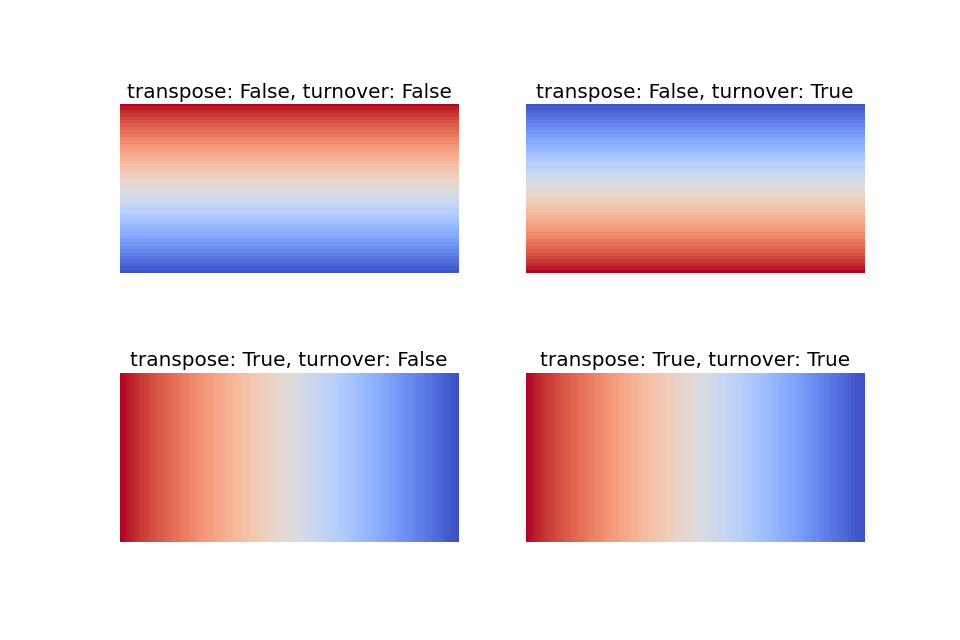
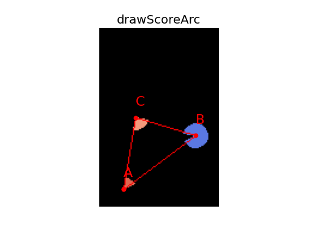

ddrev.utils.feedback_utils module¶
- ddrev.utils.feedback_utils.score2color(score: float, cmap: Union[str, matplotlib.colors.Colormap] = 'coolwarm_r') → Tuple[int, int, int][source]¶
Convert score to RGB color.
- Parameters
score (float) – Score normalized between
0and1.cmap (Union[str,Colormap], optional) – Color map to apply. Defaults to
"coolwarm_r".
- Returns
RGB color corresponding to the score.
- Return type
Tuple[int,int,int]
Examples
>>> from ddrev.utils import score2color >>> score2color(score=0.2) (123, 158, 248) >>> score2color(score=0.5) (221, 220, 219) >>> score2color(score=1) (59, 77, 193)
- ddrev.utils.feedback_utils.cmap_indicator_create(width: int, height: int, transpose: bool = False, turnover: bool = False, cmap: Union[str, matplotlib.colors.Colormap] = 'coolwarm_r') → numpy.ndarray[Any, numpy.dtype[numpy.uint8]][source]¶
Create a colormap indicator
- Parameters
width (int), height (int) – The size of the created indicator.
transpose (bool, optional) – Whether to transpose it or not. Defaults to
False.turnover (bool, optional) – Whether to turn it over or not. Defaults to
False.cmap (Union[str, Colormap], optional) – Color map to apply. Defaults to
"coolwarm_r".
- Returns
Color map indicator.
- Return type
npt.NDArray[np.uint8]
>>> import numpy as np >>> import matplotlib.pyplot as plt >>> from ddrev.utils import cmap_indicator_create >>> fig, axes = plt.subplots(ncols=2,nrows=2,figsize=(12,8)) >>> for ax_r,transpose in zip(axes, [False, True]): ... for ax,turnover in zip(ax_r, [False, True]): ... ax.imshow(cmap_indicator_create(width=100, height=50, transpose=transpose, turnover=turnover)) ... ax.axis("off") ... ax.set_title(f"transpose: {transpose}, turnover: {turnover}", fontsize=18) >>> fig.show()

- ddrev.utils.feedback_utils.drawScoreArc(frame: numpy.ndarray[Any, numpy.dtype[numpy.uint8]], score: float, coords: List[List[int]], inplace: bool = True, axes: Tuple[int, int] = (10, 10), lineType: int = 8, cmap: Union[str, matplotlib.colors.Colormap] = 'coolwarm_r', max_score: Optional[float] = None, **kwargs) → numpy.ndarray[Any, numpy.dtype[numpy.uint8]][source]¶
Draw an arc with fill color according to the
score.- Parameters
frame (npt.NDArray[np.uint8]) – Input image.
score (float) – Score value to describe.
coords (List[List[int]]) – Coordinates of the three points used to calculate the angle.
inplace (bool, optional) – Whether frame is edited in place. Defaults to
True.axes (Tuple[int, int], optional) – Half of the size of the ellipse main axes. Defaults to
(10, 10).lineType (int, optional) – Type of the ellipse boundary. Defaults to
cv2.LINE_8.
- Returns
An edited image.
- Return type
npt.NDArray[np.uint8]
>>> import cv2 >>> import numpy as np >>> import matplotlib.pyplot as plt >>> from ddrev.utils import drawScoreArc, calculate_angle >>> fig, ax = plt.subplots() >>> A = np.asarray([0.2, 0.9]) >>> B = np.asarray([0.8, 0.6]) >>> C = np.asarray([0.3, 0.5]) >>> frame = np.zeros(shape=(150, 100, 3), dtype=np.uint8) >>> H, W = frame.shape[:2] >>> drawScoreArc(frame, calculate_angle(A,B,C), coords=(A,B,C), max_score=360.) >>> drawScoreArc(frame, calculate_angle(A,C,B), coords=(A,C,B), max_score=360.) >>> drawScoreArc(frame, calculate_angle(B,A,C), coords=(B,A,C), max_score=360.) >>> pX, pY = (None, None) >>> for name, (x, y) in zip(list("ABCA"), [A,B,C,A]): ... X, Y = (int(x * W), int(y * H)) ... ax.scatter(X, Y, color="red") ... ax.text(x=X, y=Y - 10, s=name, size=20, color="red") ... if pX is not None: ... cv2.line(frame, (pX, pY), (X, Y), (255, 0, 0)) ... pX, pY = (X, Y) >>> ax.imshow(frame) >>> ax.axis("off") >>> ax.set_title("drawScoreArc", fontsize=18) >>> fig.show()

- ddrev.utils.feedback_utils.putScoreText(frame: numpy.ndarray[Any, numpy.dtype[numpy.uint8]], score: float, coords: List[List[int]], inplace: bool = True, fontFace: int = 1, fontScale: int = 1, color: Tuple[int, int, int] = (0, 255, 255), **kwargs) → numpy.ndarray[Any, numpy.dtype[numpy.uint8]][source]¶
Write the
scoreat the midpoint of both ends of the coordinates (coords).- Parameters
frame (npt.NDArray[np.uint8]) – Input image.
score (float) – Score value to describe.
coords (List[List[int]]) – Coordinates of the three points used to calculate the angle.
inplace (bool, optional) – Whether frame is edited in place. Defaults to
True.fontFace (int, optional) – Font type. Defaults to
cv2.FONT_HERSHEY_PLAIN.fontScale (int, optional) – Font scale factor that is multiplied by the font-specific base size.. Defaults to
2.color (Tuple[int,int,int], optional) – Text color. Defaults to
(0,255,255).
- Returns
An edited image.
- Return type
npt.NDArray[np.uint8]
>>> import cv2 >>> import numpy as np >>> import matplotlib.pyplot as plt >>> from ddrev.utils import putScoreText, calculate_angle >>> fig, ax = plt.subplots() >>> coords = [ ... np.asarray([0.2, 0.9]), ... np.asarray([0.8, 0.6]), ... np.asarray([0.3, 0.5]), >>> ] >>> frame = np.zeros(shape=(150, 100, 3), dtype=np.uint8) >>> H, W = frame.shape[:2] >>> putScoreText(frame, calculate_angle(*coords), coords=coords) >>> pX, pY = (None, None) >>> for name, (x, y) in zip(list("ABC"), coords): ... X, Y = (int(x * W), int(y * H)) ... ax.scatter(X, Y, color="red") ... ax.text(x=X, y=Y - 10, s=name, size=20, color="red") ... if pX is not None: ... cv2.line(frame, (pX, pY), (X, Y), (255, 0, 0)) ... pX, pY = (X, Y) >>> ax.imshow(frame) >>> ax.axis("off") >>> ax.set_title("putScoreText", fontsize=18) >>> fig.show()